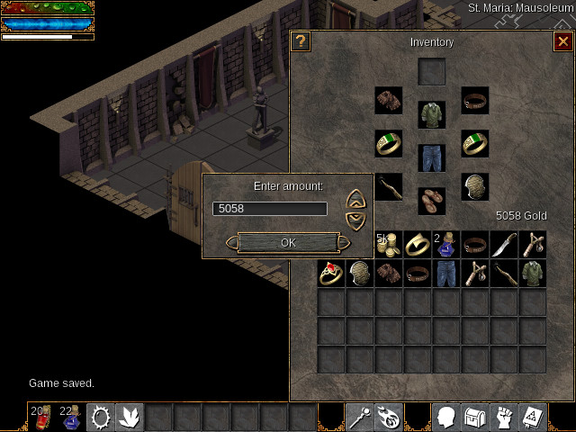

2015/09/22 23:09:18
After designing the Empyrean campaign's first major boss fight, it came time to tie it all in to the main quest. This prompted me to review the design of the Book of the Dead map.
{kind=link}
The original plan for this map entailed a boss fight later in the game, but that idea has been scrapped. Instead the initial focus of the map is getting the player to start the main quest. The player enters from the southern staircase and takes the teleport to the western platform. They can't teleport back until reading the Book of the Dead and triggering the main quest.
Once this happens, they can teleport to the eastern platform and head either: south back to town or north to the wilderness. At this point, the north and south teleports have changed to send the player directly to the eastern platform whenever they pass through the map again.
This in combination with the completion of the St. Maria maps means the Empyrean campaign is a little more than 1/4 complete. That might not seem like much, but a lot of the time I've spent in the last few weeks has involved further balancing gameplay numbers. Things like figuring out the rate at which enemies get stronger, the strength of player powers, and the bonuses given by equipment. And every few steps of the way, I found something that was missing on the engine side that needed implementation. That said, things should be easier going forward. Those engine features are now implemented, and I no longer feel the need to make large, sweeping changes to gameplay numbers.
2015/08/27 23:04:11
Today, I implemented, what I think, is a useful feature into Flare.
Previously, there were instances where the player could pick up just one item in an inventory stack (like when shift-clicking). In fact, all item movement on touchscreen/mouse-less devices was done that way. This was unacceptable for large stacks, such as those for Gold. My solution was to create a dialog menu to let the player decide how much they want to pick up.

The implementation of this was a bit tricky. Flare's drag-and-drop system worked under the assumption that it was literally that: DRAG and drop. Clicking on items immediately removed them from their source slot, and there was no way to maintain what was being dragged if the player let off the mouse button. So as a result, I needed to make sure:
- The stack isn't picked up when shift-clicking on an item stack
- The item stack and source id are still stored in our dragging variables, but not displayed visually
- When the player clicks "OK" on the dialog box, the desired quantity is removed from the source slot
I'm satisfied with the end result, although the dialog menu itself may get some usability tweaks. For example, the text field with the value could be editable by keyboard. Also, the rate at which the arrows increment/decrement the value might need some adjusting.
2015/08/23 22:34:37
Today, I finished laying out the first map of the first major dungeon in the Empyrean campaign. The area it is a part of is tentatively named Lochport Tower, but there's a good chance that will change.

The center area is vertically symmetrical, and the outer ring is horizontally symmetrical. Both combined create a shape that I really like. From a gameplay perspective, the player will travel clockwise around the outer ring. At 3 o'clock, there will be a mini-boss defending some treasure chests. One of the chests will contain a key that will unlock the door to the next level in the center area.
2015/08/19 16:25:12
I made some changes to this site today, mostly related to the navigation. In my first blog post I described the system of Markdown + bash scripts that I use to generate the pages here. I've made it so that the navigation now gets automatically populated with all static pages, the main blog page, and the last five blog entries. The navigation is applied to each page in the following way:
- Start with the first half of the header template
- Generate the list of links for the navigation
- Use sed to find the first line containing the current page's filename (i.e. the link to the current page in the navigation)
- Use that line number with sed to insert a class attribute to the link. This allows giving the link current page its own background color in the navigation
- Append the second half of the header, the page contents, and the footer (in that order)
Points 3 and 4 are pretty neat in my opinion. The only options to get this effect would be to either:
- Use unique CSS classes for each page. Not ideal for how I'm generating pages.
- Or use Javascript. This is a Javascript-free site, so that's a no-go.
In other news, Flare engine is at a state I'm happy calling version 1.0. The primary task now is to work on the Empyrean campaign, which is the replacement for the alpha demo game the was bundled with version 0.19. Development of the Empyrean campaign has been slow. While part of this is due to my own laziness, a good portion of the blame lies in the fact that game design is hard. Most of the gameplay values (stats, items) from the alpha demo have been thrown out. Getting things reasonably balanced is a tall order, and I feel like I'm just now getting close to a fair level of difficulty after much iteration. While I've been steadily developing maps to test content on, I look forward to going full speed into map and quest creation.
2015/03/10 15:38:09
Things have been interesting for the passed few weeks. The majority of my programming activity outside of FLARE boils down to personal pet projects. Sure, I distribute the source code under free licenses, but I never actually intend for other people to use any of my stuff.
Freeblocks

Freeblocks is one of those projects. I hacked it together for the One Game A Month game jam in January of 2013. At the time, I had a little bit of game dev experience under my belt from my contributions on FLARE. Looking back, however, I can see that I was still very inexperienced. So as with most pet projects, I put it on the shelf and left it there.
Fast-forward 2 years to February of this year, and I receive a pull request for a port to the GCW-Zero by Github user cxong. The port was rough at first, but cxong and myself have spent the past month and a half improving the game. The improvements didn't stop at getting the GCW-Zero port working either. Some other milestones include a separate "jewels" game mode, control re-mapping support, and inclusion in the FreeBSD ports collection. At this time, version 0.5 is the current released version.
SpaceFM
Last June, I wanted to implement video thumbnails into the SpaceFM file manager. So I did just that. However, IgnorantGuru had announced his hiatus a few months before, so it looked like SpaceFM would go unmaintained. I kept my changes on my own fork as a result. IgnorantGuru has since returned and contacted my about my video thumbnail code. I'm happy to say that it's upstream now and on it's way into SpaceFM 1.0!
Dunst
Dunst is a super lightweight notification daemon I found. I started tinkering with it, since I wanted to add the ability to activate the default action by middle-clicking on a notification. In the process, I discovered a handful of memory leaks that I patched and got sent upstream. It's not much, but it still feels good to have more contributions in the things-that-aren't-mine bin.
FLARE
All this work on other projects has stolen some of my attention from FLARE recently. That isn't to say it's been completely neglected. On the engine side, a lot of small bugs have been fixed, including a nasty crash related to using both transformations and summons. In addition, Igor has put together the MapSaver API, which can be used in external programs that want to use FLARE's data structures for outputting maps. The Random Map Generator is an example use of this. There are a few things I have on my mind that I want to implement before going to 1.0, but the engine is in a really good state now.
As for the actual game part, development of the Empyrean campaign has been slow. I was last working on "area 2", which contains three maps: a swamp area, a graveyard, and a ruined town as the entrance to the first dungeon. I'm happy with the swamp map that I created (see below). However, the graveyard map is not looking good to me as of now. I need to spend more time experimenting with it.

The Empyrean campaign is going to require some rethinking in terms of gameplay. Things like the types of powers available to the player, power cooldowns, the amount of stat points per level, etc. I've been brainstorming ideas about all of these, and I'll probably start experimenting once the maps for the first dungeon are complete. That will be a good vertical slice to test things with.
When the engine and Empyrean campaign stuff starts coming together, I'd like to put together another FLARE developer log, since it's been quite a while since the last one. The reason I'm putting it off until more Empyrean stuff is complete is because I want some new stuff to show when demoing the engine features. Sure, I could show most things with the existing alpha_demo mod, but it's more exciting to see something new.
Now I just need to pull myself away from maintaining Freeblocks and playing Torchlight II.